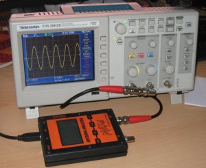
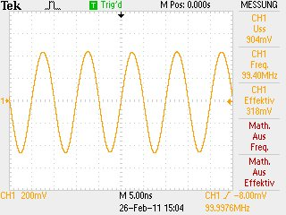
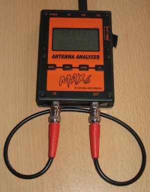
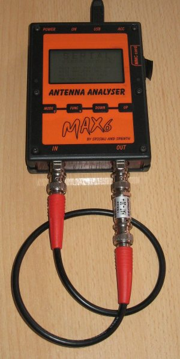

Selecteer de gewenste calibratiefrequentie in het veld Cal. freq.
Sluit samen met een scope een 50 Ohm afsluiting aan op de DUT-connector. Controleer of de T-connector aangesloten is op de scope voor het verkrijgen van de juiste uitlezingen.

Het beeld op de scope zal zoiets als dit zijn:

Voer de gemeten Uss spanning in in het veld Gemeten Uss:
Voer de verzwakking van het gewenste pad in in het veld Cal.Verzwakker:
Sluit een kabel aan tussen de DUT en DET-connector.

Druk op de Loop-knop.
Sluit het verzwakker pad samen met de loop-kabel aan tussen de DUT en DET-connector.

Druk op de Atten.-knop.
Indien de OK-knop is geactiveerd zullen de nieuwe calibratiewaarden getoond worden in de gecalibreerde velden.
Druk op de OK-Knop om de nieuwe calibratiewaarden op te slaan en het dialoog te sluiten.
Druk op de Annuleren knop om de initiele calibratiewaarden te behouden en het dialoog te sluiten.